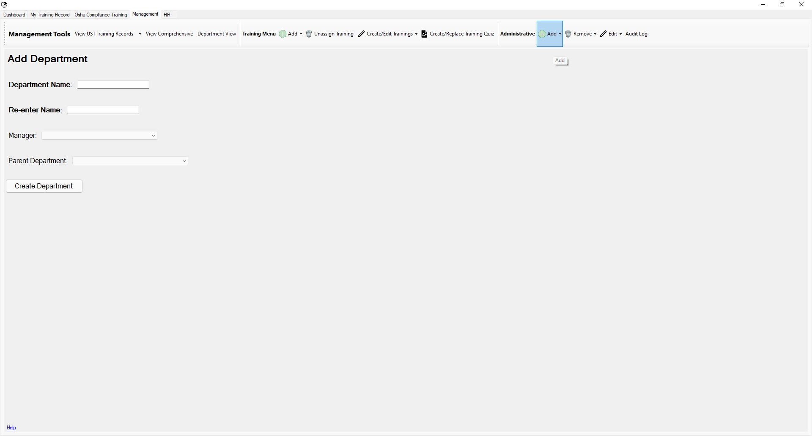

Return to Main Menu
Add a Department
The Add Department page can be accessed via the "Administrative" section of the "Management Tools" toolbar under the "Add" dropdown.
NOTE: When a department is added as a child department of another department, the trainings of the parent department
are not automatically added to the new department. You will need to assign any desired department trainings after creating the new department.

Instructions:
-
Navigate to the Add Department page.
-
Enter the name for the department.
-
Confirm the chosen name for the department by re-entering it in the "Re-enter Name" field.
-
Select a department manager for the department.
-
Select a parent department for the department. A parent department is the department that is over this department.
-
Press the "Create Department" button.